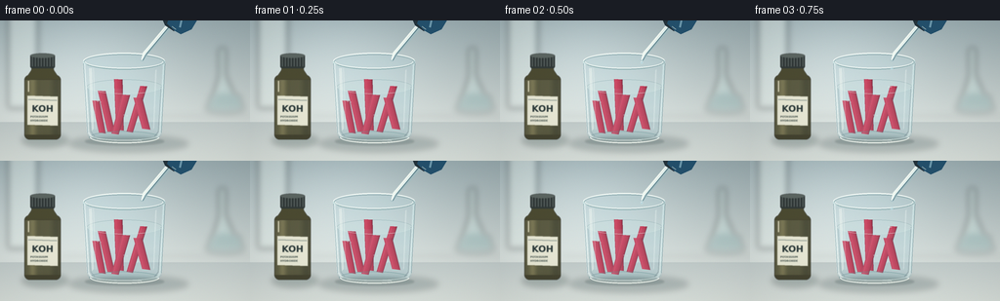
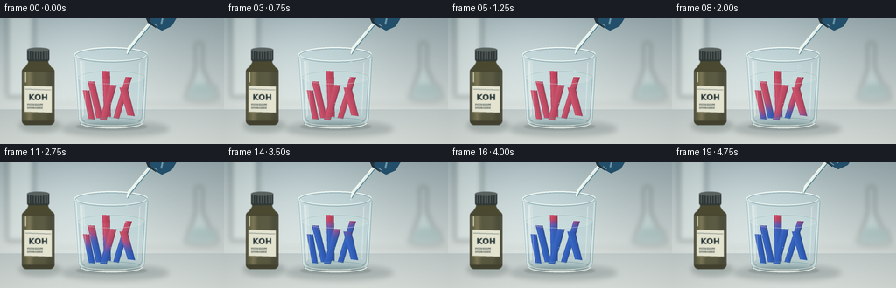

CODING AGENTS AS PIXEL WORLD MODELS
traex/GPT-6.1-Sol · material_0033
点击播放 · 原生 RGB 像素
逐轮保存的候选
回放视频、检查图与代码变化。
每份候选均可单独播放。实际图片检查记录在下方工具轨迹中。
候选 01播放与检查图
点击播放 · 原生 RGB 像素


展开代码变化
--- 上一保存版本
+++ 本次保存版本
@@ -0,0 +1,202 @@
+from pathlib import Path
+import numpy as np
+from PIL import Image, ImageDraw, ImageFilter, ImageFont
+import artifact_io
+
+ROOT=Path(__file__).resolve().parent
+W,H,S=256,144,4
+rng=np.random.default_rng(7033)
+
+def rgba_layer(): return Image.new('RGBA',(W*S,H*S),(0,0,0,0))
+def ellipse(d,b,fill,outline=None,width=1):
+ d.ellipse(tuple(round(v*S) for v in b),fill=fill,outline=outline,width=max(1,round(width*S)))
+def line(d,p,fill,width=1):
+ d.line([(round(x*S),round(y*S)) for x,y in p],fill=fill,width=max(1,round(width*S)),joint='curve')
+def poly(d,p,fill): d.polygon([(round(x*S),round(y*S)) for x,y in p],fill=fill)
+def font(n,bold=False):
+ return ImageFont.truetype('/usr/share/fonts/truetype/dejavu/DejaVuSans'+('-Bold' if bold else '')+'.ttf',round(n*S))
+def text(d,xy,t,n,c,bold=False): d.text((round(xy[0]*S),round(xy[1]*S)),t,font=font(n,bold),fill=c)
+def over(im,l): return Image.alpha_composite(im,l)
+
+yy,xx=np.mgrid[0:H*S,0:W*S].astype(float); x=xx/S;y=yy/S
+# Smooth ambient illumination and the laboratory bench.
+base=np.empty((H*S,W*S,3),float)
+top=np.array([151,169,173]);bottom=np.array([210,218,215])
+a=np.clip(y/100,0,1)
+base[:]=top+(bottom-top)*a[...,None]
+glow=np.exp(-((x-81)/95)**2-((y-39)/69)**2)
+base+=glow[...,None]*26
+bench=y>104
+base[bench]=np.array([193,203,202])+((y[bench]-104)/40)[:,None]*np.array([23,20,16])
+base+=rng.normal(0,.48,base.shape)
+bg=Image.fromarray(np.uint8(np.clip(base,0,255))).convert('RGBA')
+# Recognizably laboratory-like shapes remain soft and unobtrusive.
+l=rgba_layer();d=ImageDraw.Draw(l)
+poly(d,[(8,0),(38,0),(38,90),(8,90)],(232,243,238,95))
+line(d,[(38,0),(38,90)],(117,144,148,95),2)
+poly(d,[(224,28),(231,28),(231,56),(247,91),(213,91),(224,57)],(194,224,220,90))
+ellipse(d,(210,86,251,95),(127,167,168,65))
+poly(d,[(216,76),(246,76),(249,88),(212,88)],(83,147,149,55))
+line(d,[(228,28),(228,57),(216,85)],(244,250,242,100),1.5)
+line(d,[(62,98),(256,98)],(116,141,143,55),1)
+bg=over(bg,l.filter(ImageFilter.GaussianBlur(3.2*S)))
+# Contact shadows: glass and bottle.
+l=rgba_layer();d=ImageDraw.Draw(l)
+ellipse(d,(70,118,193,135),(46,66,69,56));ellipse(d,(22,116,70,130),(44,65,60,62))
+bg=over(bg,l.filter(ImageFilter.GaussianBlur(3*S)))
+l=rgba_layer();d=ImageDraw.Draw(l)
+ellipse(d,(87,120,168,128),(52,77,76,59))
+bg=over(bg,l.filter(ImageFilter.GaussianBlur(.9*S)))
+# Reagent bottle, with dark amber glass and a printed laboratory label.
+l=rgba_layer();d=ImageDraw.Draw(l)
+d.rounded_rectangle((25*S,56*S,62*S,122*S),radius=5*S,fill=(68,67,48,255))
+poly(d,[(26,60),(32,51),(33,45),(54,45),(55,51),(61,60)],(76,75,50,255))
+for k in range(36):
+ q=k/36
+ v=np.exp(-((q-.20)/.1)**2)*35-np.exp(-((q-.88)/.14)**2)*18
+ line(d,[(26+k,61),(26+k,117)],(int(75+v),int(73+v*.9),int(45+v*.6),220),1)
+d.rounded_rectangle((31*S,35*S,56*S,49*S),radius=2*S,fill=(50,58,57,255))
+for k in range(33,56,3): line(d,[(k,37),(k,47)],(90,99,95,180),.55)
+ellipse(d,(31,33.8,56,38.3),(92,102,98,255))
+poly(d,[(28,77),(59,78),(59,108),(28,107)],(232,232,213,255))
+line(d,[(29,81),(58,82)],(88,107,104,230),.7)
+text(d,(32.5,85),'KOH',9.3,(43,57,57,255),True)
+text(d,(31,97),'POTASSIUM',2.8,(64,78,72,255),True)
+text(d,(31,101),'HYDROXIDE',2.8,(64,78,72,255),True)
+line(d,[(29,62),(29,73)],(222,202,144,100),1)
+bg=over(bg,l.filter(ImageFilter.GaussianBlur(.35*S)))
+
+# Fixed fiber texture: each strip retains its paper identity during reaction.
+noise=rng.normal(0,1,(H*S,W*S))
+noise=0.60*noise+0.40*np.asarray(Image.fromarray(np.float32(noise),mode='F').filter(ImageFilter.GaussianBlur(.35*S))) if False else noise
+strips=[(104,72,114,115,8.2,-.03), (147,67,133,115,7.0,.08), (121,60,123,113,8.5,.03), (98,82,105,116,7.3,-.05), (141,79,150,112,9.0,.04), (129,76,118,117,8.0,.02)]
+
+
+def render(i):
+ t=i/19
+ im=bg.copy()
+ # Optical refraction of the cylindrical tumbler against the background.
+ arr=np.array(im)
+ mask=np.zeros((H*S,W*S),np.uint8)
+ md=ImageDraw.Draw(Image.fromarray(mask))
+ m=Image.new('L',im.size);dm=ImageDraw.Draw(m)
+ poly(dm,[(85,42),(169,42),(165.5,118),(161,122),(94,122),(89,118)],255)
+ ellipse(dm,(85,33,169,51),255)
+ mask=np.asarray(m)/255.
+ r=(x-127)/42
+ sx=np.clip((127+42*(r+.115*r**3))*S,0,W*S-1).astype(int)
+ sy=np.clip((y+1.2*np.exp(-((y-116)/7)**2))*S,0,H*S-1).astype(int)
+ refr=arr[sy,sx,:3].astype(float)
+ refr=refr*.94+np.array([7,13,15])
+ arr[:,:,:3]=np.uint8(arr[:,:,:3]*(1-mask[...,None])+np.clip(refr,0,255)*mask[...,None])
+ im=Image.fromarray(arr,'RGBA')
+ # Far wall, clear water, dark back meniscus.
+ l=rgba_layer();d=ImageDraw.Draw(l)
+ ellipse(d,(86,34.7,168,50.0),(205,232,232,16),(81,120,125,132),.6)
+ poly(d,[(89,68),(165,68),(162,116),(158,120),(96,120),(92,116)],(126,178,191,30))
+ ellipse(d,(89,60.4,166,75.3),(196,220,220,76),(114,153,158,100),.45)
+ line(d,[(90,69),(93,114),(97,119)],(82,120,132,72),.65)
+ line(d,[(165,68),(162,114),(158,119)],(70,103,117,79),.65)
+ im=over(im,l)
+ # Litmus paper strips, with advancing red -> purple -> deep blue response.
+ for j,(xt,yt,xb,yb,width,skew) in enumerate(strips):
+ sway=(np.sin(i*.53+j*.8)-np.sin(j*.8))*min(t*1.7,1)*.8
+ xb+=sway;xt+=sway*.25
+ p=[(xt-width/2,yt),(xt+width/2,yt+.6),(xb+width/2-0.7,yb),(xb-width/2,yb-.9)]
+ m=Image.new('L',im.size);dm=ImageDraw.Draw(m);poly(dm,p,255)
+ alpha=np.asarray(m)/255.
+ z=(y-yt)/(yb-yt)
+ cx=xt+(xb-xt)*np.clip(z,0,1)
+ # Diffusion down from the waterline and throughout the wetted paper.
+ onset=.18+j*.023
+ progress=np.clip((t-onset)/.54,0,1)
+ front=69+(1-progress)*60
+ local=1/(1+np.exp(np.clip(-(y-front)/3.1,-30,30)))
+ local*=np.clip((t-onset)*8,0,1)
+ local*=1/(1+np.exp(np.clip(-(y-66.5)/.9,-30,30)))
+ local=np.clip(local,0,1)
+ red=np.array([193,67,93]);violet=np.array([124,74,150]);blue=np.array([41,87,182])
+ col=red+(violet-red)*np.clip(local[...,None]*2,0,1)
+ col+=(blue-violet)*np.clip((local[...,None]-.5)*2,0,1)
+ # Uneven fibers, damp paper, shadowed edges and gentle curvature.
+ q=(x-cx)/(width*.5)
+ lighting=1-.10*np.clip(q,-1,1)-.15*np.abs(q)**3
+ lighting=np.clip(lighting,.73,1.05)
+ fib=noise*2.25+1.1*np.sin(y*38+x*9)
+ col=col*lighting[...,None]+fib[...,None]
+ col+=np.exp(-((q+.65)/.22)**2)[...,None]*9
+ col=np.clip(col,0,255)
+ aa=np.array(im)
+ aa[:,:,:3]=np.uint8(aa[:,:,:3]*(1-alpha[...,None])+col*alpha[...,None])
+ im=Image.fromarray(aa,'RGBA')
+ l=rgba_layer();d=ImageDraw.Draw(l)
+ line(d,[p[0],p[3]],(226,203,223,55),.35)
+ line(d,[p[1],p[2]],(41,54,86,60),.4)
+ im=over(im,l)
+ # A gentle clear-water veil and foreground meniscus preserve the transparency.
+ l=rgba_layer();d=ImageDraw.Draw(l)
+ poly(d,[(90,70),(164,70),(161,116),(156,120),(98,120),(93,115)],(192,225,230,15))
+ d.arc((89*S,60.4*S,166*S,75.3*S),0,180,fill=(229,246,242,156),width=round(.6*S))
+ # Sparse small air bubbles clinging to the wetted paper, no exaggerated fizz.
+ for j in range(8):
+ bx=100+(j*13.31)%50;by=83+(j*7.1)%28-.4*np.sin(t*4+j)
+ br=.38+(.15 if j%3==0 else 0)
+ ellipse(d,(bx-br,by-br,bx+br,by+br),(184,212,222,65),(239,253,251,155),.18)
+ # Surface rings generated by each arriving drop.
+ if 3<=i<=15:
+ phase=((i-3)%4)/4
+ rad=2+phase*13
+ ellipse(d,(143-rad,68-rad*.22,143+rad,68+rad*.22),None,(228,249,246,round(130*(1-phase))),.4)
+ im=over(im,l)
+ # Specular glass: thick base, translucent cylindrical edge and rim.
+ l=rgba_layer();d=ImageDraw.Draw(l)
+ ellipse(d,(91,113.5,163,126),(140,183,183,26),(100,141,145,117),.8)
+ d.arc((92*S,114*S,163*S,126*S),0,180,fill=(248,253,245,211),width=round(1.3*S))
+ d.arc((94*S,113.8*S,161*S,123*S),0,175,fill=(222,244,241,155),width=round(.75*S))
+ poly(d,[(85,42),(87,43),(91,114),(95,120),(92,119),(89,114)],(241,253,251,134))
+ poly(d,[(166.7,43),(169,42),(165.6,114),(162,120),(160,120),(163,114)],(221,246,245,114))
+ line(d,[(85.3,44),(89.5,115)],(86,126,136,126),.55)
+ line(d,[(168.8,44),(165,115)],(72,113,121,145),.55)
+ poly(d,[(91,49),(94,49),(96,111),(94,113)],(251,255,248,105))
+ poly(d,[(95.1,49),(96,49),(98.5,111),(97.5,112)],(255,255,251,58))
+ poly(d,[(159,51),(160.2,50),(157.7,110),(156.7,112)],(247,255,252,74))
+ ellipse(d,(85,33.2,169,50.7),None,(213,239,237,191),1.1)
+ d.arc((85*S,33.2*S,169*S,50.7*S),182,350,fill=(251,255,250,233),width=round(1*S))
+ d.arc((87*S,35*S,167*S,49.2*S),0,178,fill=(250,255,250,225),width=round(.7*S))
+ d.arc((85*S,33.2*S,169*S,50.7*S),3,157,fill=(76,116,120,130),width=round(.45*S))
+ line(d,[(99,121.6),(117,123.1),(145,122.9)],(248,255,251,130),.7)
+ im=over(im,l)
+ # A laboratory glass dropper, suspended over the open rim.
+ # Its smooth withdrawal only happens once the final drops have been added.
+ withdraw=max(0,(i-15)/4)*6
+ dx=withdraw*.8;dy=-withdraw
+ l=rgba_layer();d=ImageDraw.Draw(l)
+ def pp(points):return [(a+dx,b+dy) for a,b in points]
+ poly(d,pp([(147,33),(173,0),(179,4),(151,35),(146,42),(143.7,41)]),(162,190,194,195))
+ poly(d,pp([(146,33),(174,0),(176,1.7),(149,35),(145,41),(144.6,40)]),(234,248,244,227))
+ line(d,pp([(176,3),(149.2,35),(146.3,40.8)]),(61,106,120,190),.7)
+ line(d,pp([(173.5,1),(147.1,33.8),(144.9,39.9)]),(255,255,246,244),.7)
+ # Visible dark rubber collar and blue pipette bulb at the image edge.
+ poly(d,pp([(166,-2),(180,-8),(187,-2),(178,11),(169,5)]),(36,51,60,255))
+ poly(d,pp([(176,-10),(195,-11),(202,-1),(196,9),(185,14),(178,10),(171,3)]),(36,81,109,255))
+ line(d,pp([(180,-6),(186,-2),(184,7)]),(87,143,170,180),2)
+ line(d,pp([(176,6),(180,9)]),(115,147,153,130),.65)
+ if 2<=i<=15:
+ phase=((i-2)%4)/4
+ py=43+phase*24
+ radius=1.05+phase*.18
+ ellipse(d,(145-radius+dx,py-1.7+dy,145+radius+dx,py+1.4+dy),(172,208,218,205),(230,248,247,213),.3)
+ ellipse(d,(144.4+dx,py-1.0+dy,145.0+dx,py-.25+dy),(255,255,249,238))
+ im=over(im,l)
+ # Clean photographic finish, fine film grain, and mild optical falloff.
+ im=im.convert('RGB').resize((W,H),Image.Resampling.LANCZOS)
+ a=np.array(im).astype(float)
+ Y,X=np.mgrid[0:H,0:W]
+ vig=1-.075*((X-129)/170)**2-.045*((Y-75)/112)**2
+ a*=vig[...,None]
+ a+=rng.normal(0,.40,a.shape)
+ return np.uint8(np.clip(a,0,255))
+
+frames=np.stack([render(i) for i in range(20)])
+artifact_io.save(frames,ROOT)
+print('Saved',frames.shape,'RGB frames to',ROOT)
可观测工具轨迹
实际执行的命令与返回图片。
命令 1exit 0
/bin/bash -lc "ls -la && cat prompt.txt && printf '\\n--- RULES ---\\n' && cat GENERATION_RULES.md && printf '\\n--- SPEC ---\\n' && cat task_spec.json"
命令 2exit 0
/bin/bash -lc 'cat artifact_io.py'
命令 3exit 0
/bin/bash -lc 'fc-list | head -12'
命令 4exit 0
/bin/bash -lc "cat > generate.py <<'PY'
from pathlib import Path
import numpy as np
from PIL import Image, ImageDraw, ImageFilter, ImageFont
import artifact_io
ROOT=Path(__file__).resolve().parent
W,H,S=256,144,4
rng=np.random.default_rng(7033)
def rgba_layer(): return Image.new('RGBA',(W*S,H*S),(0,0,0,0))
def ellipse(d,b,fill,outline=None,width=1):
d.ellipse(tuple(round(v*S) for v in b),fill=fill,outline=outline,width=max(1,round(width*S)))
def line(d,p,fill,width=1):
d.line([(round(x*S),round(y*S)) for x,y in p],fill=fill,width=max(1,round(width*S)),joint='curve')
def poly(d,p,fill): d.polygon([(round(x*S),round(y*S)) for x,y in p],fill=fill)
def font(n,bold=False):
return ImageFont.truetype('/usr/share/fonts/truetype/dejavu/DejaVuSans'+('-Bold' if bold else '')+'.ttf',round(n*S))
def text(d,xy,t,n,c,bold=False): d.text((round(xy[0]*S),round(xy[1]*S)),t,font=font(n,bold),fill=c)
def over(im,l): return Image.alpha_composite(im,l)
yy,xx=np.mgrid[0:H*S,0:W*S].astype(float); x=xx/S;y=yy/S
# Smooth ambient illumination and the laboratory bench.
base=np.empty((H*S,W*S,3),float)
top=np.array([151,169,173]);bottom=np.array([210,218,215])
a=np.clip(y/100,0,1)
base[:]=top+(bottom-top)*a[...,None]
glow=np.exp(-((x-81)/95)**2-((y-39)/69)**2)
base+=glow[...,None]*26
bench=y>104
base[bench]=np.array([193,203,202])+((y[bench]-104)/40)[:,None]*np.array([23,20,16])
base+=rng.normal(0,.48,base.shape)
bg=Image.fromarray(np.uint8(np.clip(base,0,255))).convert('RGBA')
# Recognizably laboratory-like shapes remain soft and unobtrusive.
l=rgba_layer();d=ImageDraw.Draw(l)
poly(d,[(8,0),(38,0),(38,90),(8,90)],(232,243,238,95))
line(d,[(38,0),(38,90)],(117,144,148,95),2)
poly(d,[(224,28),(231,28),(231,56),(247,91),(213,91),(224,57)],(194,224,220,90))
ellipse(d,(210,86,251,95),(127,167,168,65))
poly(d,[(216,76),(246,76),(249,88),(212,88)],(83,147,149,55))
line(d,[(228,28),(228,57),(216,85)],(244,250,242,100),1.5)
line(d,[(62,98),(256,98)],(116,141,143,55),1)
bg=over(bg,l.filter(ImageFilter.GaussianBlur(3.2*S)))
# Contact shadows: glass and bottle.
l=rgba_layer();d=ImageDraw.Draw(l)
ellipse(d,(70,118,193,135),(46,66,69,56));ellipse(d,(22,116,70,130),(44,65,60,62))
bg=over(bg,l.filter(ImageFilter.GaussianBlur(3*S)))
l=rgba_layer();d=ImageDraw.Draw(l)
ellipse(d,(87,120,168,128),(52,77,76,59))
bg=over(bg,l.filter(ImageFilter.GaussianBlur(.9*S)))
# Reagent bottle, with dark amber glass and a printed laboratory label.
l=rgba_layer();d=ImageDraw.Draw(l)
d.rounded_rectangle((25*S,56*S,62*S,122*S),radius=5*S,fill=(68,67,48,255))
poly(d,[(26,60),(32,51),(33,45),(54,45),(55,51),(61,60)],(76,75,50,255))
for k in range(36):
q=k/36
v=np.exp(-((q-.20)/.1)**2)*35-np.exp(-((q-.88)/.14)**2)*18
line(d,[(26+k,61),(26+k,117)],(int(75+v),int(73+v*.9),int(45+v*.6),220),1)
d.rounded_rectangle((31*S,35*S,56*S,49*S),radius=2*S,fill=(50,58,57,255))
for k in range(33,56,3): line(d,[(k,37),(k,47)],(90,99,95,180),.55)
ellipse(d,(31,33.8,56,38.3),(92,102,98,255))
poly(d,[(28,77),(59,78),(59,108),(28,107)],(232,232,213,255))
line(d,[(29,81),(58,82)],(88,107,104,230),.7)
text(d,(32.5,85),'KOH',9.3,(43,57,57,255),True)
text(d,(31,97),'POTASSIUM',2.8,(64,78,72,255),True)
text(d,(31,101),'HYDROXIDE',2.8,(64,78,72,255),True)
line(d,[(29,62),(29,73)],(222,202,144,100),1)
bg=over(bg,l.filter(ImageFilter.GaussianBlur(.35*S)))
# Fixed fiber texture: each strip retains its paper identity during reaction.
noise=rng.normal(0,1,(H*S,W*S))
noise=0.60*noise+0.40*np.asarray(Image.fromarray(np.float32(noise),mode='F').filter(ImageFilter.GaussianBlur(.35*S))) if False else noise
strips=[(104,72,114,115,8.2,-.03), (147,67,133,115,7.0,.08), (121,60,123,113,8.5,.03), (98,82,105,116,7.3,-.05), (141,79,150,112,9.0,.04), (129,76,118,117,8.0,.02)]
def render(i):
t=i/19
im=bg.copy()
# Optical refraction of the cylindrical tumbler against the background.
arr=np.array(im)
mask=np.zeros((H*S,W*S),np.uint8)
md=ImageDraw.Draw(Image.fromarray(mask))
m=Image.new('L',im.size);dm=ImageDraw.Draw(m)
poly(dm,[(85,42),(169,42),(165.5,118),(161,122),(94,122),(89,118)],255)
ellipse(dm,(85,33,169,51),255)
mask=np.asarray(m)/255.
r=(x-127)/42
sx=np.clip((127+42*(r+.115*r**3))*S,0,W*S-1).astype(int)
sy=np.clip((y+1.2*np.exp(-((y-116)/7)**2))*S,0,H*S-1).astype(int)
refr=arr[sy,sx,:3].astype(float)
refr=refr*.94+np.array([7,13,15])
arr[:,:,:3]=np.uint8(arr[:,:,:3]*(1-mask[...,None])+np.clip(refr,0,255)*mask[...,None])
im=Image.fromarray(arr,'RGBA')
# Far wall, clear water, dark back meniscus.
l=rgba_layer();d=ImageDraw.Draw(l)
ellipse(d,(86,34.7,168,50.0),(205,232,232,16),(81,120,125,132),.6)
poly(d,[(89,68),(165,68),(162,116),(158,120),(96,120),(92,116)],(126,178,191,30))
ellipse(d,(89,60.4,166,75.3),(196,220,220,76),(114,153,158,100),.45)
line(d,[(90,69),(93,114),(97,119)],(82,120,132,72),.65)
line(d,[(165,68),(162,114),(158,119)],(70,103,117,79),.65)
im=over(im,l)
# Litmus paper strips, with advancing red -> purple -> deep blue response.
for j,(xt,yt,xb,yb,width,skew) in enumerate(strips):
sway=(np.sin(i*.53+j*.8)-np.sin(j*.8))*min(t*1.7,1)*.8
xb+=sway;xt+=sway*.25
p=[(xt-width/2,yt),(xt+width/2,yt+.6),(xb+width/2-0.7,yb),(xb-width/2,yb-.9)]
m=Image.new('L',im.size);dm=ImageDraw.Draw(m);poly(dm,p,255)
alpha=np.asarray(m)/255.
z=(y-yt)/(yb-yt)
cx=xt+(xb-xt)*np.clip(z,0,1)
# Diffusion down from the waterline and throughout the wetted paper.
onset=.18+j*.023
progress=np.clip((t-onset)/.54,0,1)
front=69+(1-progress)*60
local=1/(1+np.exp(np.clip(-(y-front)/3.1,-30,30)))
local*=np.clip((t-onset)*8,0,1)
local*=1/(1+np.exp(np.clip(-(y-66.5)/.9,-30,30)))
local=np.clip(local,0,1)
red=np.array([193,67,93]);violet=np.array([124,74,150]);blue=np.array([41,87,182])
col=red+(violet-red)*np.clip(local[...,None]*2,0,1)
col+=(blue-violet)*np.clip((local[...,None]-.5)*2,0,1)
# Uneven fibers, damp paper, shadowed edges and gentle curvature.
q=(x-cx)/(width*.5)
lighting=1-.10*np.clip(q,-1,1)-.15*np.abs(q)**3
lighting=np.clip(lighting,.73,1.05)
fib=noise*2.25+1.1*np.sin(y*38+x*9)
col=col*lighting[...,None]+fib[...,None]
col+=np.exp(-((q+.65)/.22)**2)[...,None]*9
col=np.clip(col,0,255)
aa=np.array(im)
aa[:,:,:3]=np.uint8(aa[:,:,:3]*(1-alpha[...,None])+col*alpha[...,None])
im=Image.fromarray(aa,'RGBA')
l=rgba_layer();d=ImageDraw.Draw(l)
line(d,[p[0],p[3]],(226,203,223,55),.35)
line(d,[p[1],p[2]],(41,54,86,60),.4)
im=over(im,l)
# A gentle clear-water veil and foreground meniscus preserve the transparency.
l=rgba_layer();d=ImageDraw.Draw(l)
poly(d,[(90,70),(164,70),(161,116),(156,120),(98,120),(93,115)],(192,225,230,15))
d.arc((89*S,60.4*S,166*S,75.3*S),0,180,fill=(229,246,242,156),width=round(.6*S))
# Sparse small air bubbles clinging to the wetted paper, no exaggerated fizz.
for j in range(8):
bx=100+(j*13.31)%50;by=83+(j*7.1)%28-.4*np.sin(t*4+j)
br=.38+(.15 if j%3==0 else 0)
ellipse(d,(bx-br,by-br,bx+br,by+br),(184,212,222,65),(239,253,251,155),.18)
# Surface rings generated by each arriving drop.
if 3<=i<=15:
phase=((i-3)%4)/4
rad=2+phase*13
ellipse(d,(143-rad,68-rad*.22,143+rad,68+rad*.22),None,(228,249,246,round(130*(1-phase))),.4)
im=over(im,l)
# Specular glass: thick base, translucent cylindrical edge and rim.
l=rgba_layer();d=ImageDraw.Draw(l)
ellipse(d,(91,113.5,163,126),(140,183,183,26),(100,141,145,117),.8)
d.arc((92*S,114*S,163*S,126*S),0,180,fill=(248,253,245,211),width=round(1.3*S))
d.arc((94*S,113.8*S,161*S,123*S),0,175,fill=(222,244,241,155),width=round(.75*S))
poly(d,[(85,42),(87,43),(91,114),(95,120),(92,119),(89,114)],(241,253,251,134))
poly(d,[(166.7,43),(169,42),(165.6,114),(162,120),(160,120),(163,114)],(221,246,245,114))
line(d,[(85.3,44),(89.5,115)],(86,126,136,126),.55)
line(d,[(168.8,44),(165,115)],(72,113,121,145),.55)
poly(d,[(91,49),(94,49),(96,111),(94,113)],(251,255,248,105))
poly(d,[(95.1,49),(96,49),(98.5,111),(97.5,112)],(255,255,251,58))
poly(d,[(159,51),(160.2,50),(157.7,110),(156.7,112)],(247,255,252,74))
ellipse(d,(85,33.2,169,50.7),None,(213,239,237,191),1.1)
d.arc((85*S,33.2*S,169*S,50.7*S),182,350,fill=(251,255,250,233),width=round(1*S))
d.arc((87*S,35*S,167*S,49.2*S),0,178,fill=(250,255,250,225),width=round(.7*S))
d.arc((85*S,33.2*S,169*S,50.7*S),3,157,fill=(76,116,120,130),width=round(.45*S))
line(d,[(99,121.6),(117,123.1),(145,122.9)],(248,255,251,130),.7)
im=over(im,l)
# A laboratory glass dropper, suspended over the open rim.
# Its smooth withdrawal only happens once the final drops have been added.
withdraw=max(0,(i-15)/4)*6
dx=withdraw*.8;dy=-withdraw
l=rgba_layer();d=ImageDraw.Draw(l)
def pp(points):return [(a+dx,b+dy) for a,b in points]
poly(d,pp([(147,33),(173,0),(179,4),(151,35),(146,42),(143.7,41)]),(162,190,194,195))
poly(d,pp([(146,33),(174,0),(176,1.7),(149,35),(145,41),(144.6,40)]),(234,248,244,227))
line(d,pp([(176,3),(149.2,35),(146.3,40.8)]),(61,106,120,190),.7)
line(d,pp([(173.5,1),(147.1,33.8),(144.9,39.9)]),(255,255,246,244),.7)
# Visible dark rubber collar and blue pipette bulb at the image edge.
poly(d,pp([(166,-2),(180,-8),(187,-2),(178,11),(169,5)]),(36,51,60,255))
poly(d,pp([(176,-10),(195,-11),(202,-1),(196,9),(185,14),(178,10),(171,3)]),(36,81,109,255))
line(d,pp([(180,-6),(186,-2),(184,7)]),(87,143,170,180),2)
line(d,pp([(176,6),(180,9)]),(115,147,153,130),.65)
if 2<=i<=15:
phase=((i-2)%4)/4
py=43+phase*24
radius=1.05+phase*.18
ellipse(d,(145-radius+dx,py-1.7+dy,145+radius+dx,py+1.4+dy),(172,208,218,205),(230,248,247,213),.3)
ellipse(d,(144.4+dx,py-1.0+dy,145.0+dx,py-.25+dy),(255,255,249,238))
im=over(im,l)
# Clean photographic finish, fine film grain, and mild optical falloff.
im=im.convert('RGB').resize((W,H),Image.Resampling.LANCZOS)
a=np.array(im).astype(float)
Y,X=np.mgrid[0:H,0:W]
vig=1-.075*((X-129)/170)**2-.045*((Y-75)/112)**2
a*=vig[...,None]
a+=rng.normal(0,.40,a.shape)
return np.uint8(np.clip(a,0,255))
frames=np.stack([render(i) for i in range(20)])
artifact_io.save(frames,ROOT)
print('Saved',frames.shape,'RGB frames to',ROOT)
PY
python generate.py"命令 5exit 0
/bin/bash -lc "python - <<'PY'
from pathlib import Path
import numpy as np
p=np.load('pixels.npz')['pixels']
assert p.shape==(144,256,20)
assert len(list(Path('frames').glob('*.png')))==20
for f in ['generate.py','pixels.npz','index.html','inspection.png','transition_check.png']:
print(f,Path(f).stat().st_size)
PY"视觉工具实际返回图片 1

保存候选 1 份；完成命令 5 次；可验证图片返回 1 张。原始 API 响应与完整日志保留在本地。